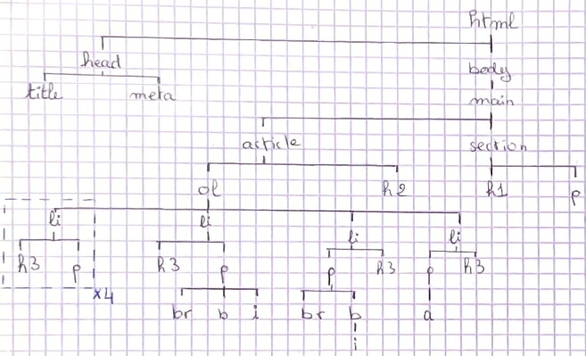

Si le résultat ne s'affiche pas correctement (entre autre
l'accent de "réponse"), que manque-t-il comme information à la
balise head pour que le fichier s'affiche correctement ?
Il manque la balise :
<meta charset="UTF-8 /"> dans la
balise head pour que le fichier s'affiche correctement. Cette
balise permet de spécifier que le document utilise l'encodage
UTF-8, ce qui est crucial pour la prise en charge des caractères
accentués et d'autres symboles.
A quoi servent les tags h1, h2 et h3 ?
Les balises h1, h2, et h3 servent à structurer un texte en HTML,
en définissant des titres de différents niveaux, ce qui améliore
l'organisation et la lisibilité du contenu pour les utilisateurs
et les moteurs de recherche. Le nombre représente la hierarchie
avec h1 = titres principaux, h2 = des sous-titres et h3 = des
sous-sous-titres, etc...
A quoi sert le tag p ?
Le tag p sert à définir un paragraphe de texte. Il permet de
structurer le contenu en paragraphes, ce qui améliore la
lisibilité et l'organisation du texte.
Ajoutez à votre compte rendu la phrase suivante :
Les tags HTML commencent par une balise ouvrante <foo> et
finissent par une balise fermante </foo>
Comment mettre en gras ou en italique ?
Il suffit d'enfermer le contenut que l'on veut mettre en gras ou
en italiques par les balises <b> et <i>
respectivement. Exemple :
<b>Gras</b> ==> Gras
<i>Italique</i> ==> Italique
Et comment faire pour mettre un mot à la fois en gras et en
italique ?
Il suffit d'enfermer le contenut que l'on veut mettre en gras
entre les balises <b> puis <i> ou vice versa.
Exemple :
<b><i>Gras + Italique</i></b> ==>
Gras + Italique
On souhaite que le titre de la fenêtre du navigateur soit
"Compte Rendu de TP1", comment faire ?
Il suffit d'ajouter une balise title à l'intérieur de la balise
head et de mettre le contenu voulu à l'intérieur.
Ajoutez un lien (le tag A) vers le cours avec comme titre cours
de programmation web.
Avec votre smartphone (ou celui du voisin), prenez une photo de
la feuille de papier sur laquelle vous avez dessiné l'arbre et
envoyez-la-vous par mail. Puis allez dans vos mails pour
récupérer l'image et la sauvegarder sous le nom de
mon-arbre-a-moi.jpg. Utilisez ensuite le tag img pour inclure
l'image dans votre compte rendu.

Arbre de mon fichier html jusqu'à la question 8 (j'avais jeté
un coup d'oeil à tout les exercices, d'où la présence d'une
liste ordonnée)
Exercice 2 - Uniform Resource Locator
Ouvrez un navigateur Web et allez à l'URL suivante
http://monge.univ-mlv.fr/ens/ :
Quel est le nom de la machine à laquelle vous accédez ?
Quel est le nom de domaine auquel vous accédez ?
Nom de la machine : monge
Nom de domaine : univ-mlv.fr
Si l'on exécute
host monge.univ-mlv.fr :
À quoi correspond la première ligne de la réponse ?
À quoi correspond la seconde ligne de la réponse ?
La première ligne
monge.univ-mlv.fr has address 193.55.61.150
correspond à la résolution du nom de la machine en adresse IP.
Cela signifie que la machine monge associée au domaine
univ-mlv.fr a l'adresse IP 193.55.61.150.
La seconde ligne
monge.univ-mlv.fr mail is handled by 10
monge.univ-mlv.fr.
indique que les emails pour le domaine sont gérés par le serveur
mail monge.univ-mlv.fr.
Dans le navigateur Web, dans la barre contenant l'URL, remplacez
le nom de la machine par son adresse IP pour vérifier que cela
fonctionne toujours. A votre avis, pourquoi utilise-t-on des
noms pour les machines plutôt que des adresses IP ?
Les noms de domaine simplifient l'expérience utilisateur et la
gestion réseau. Les noms de domaine sont plus simples à retenir
et à taper pour l'être humain. Ils permettent également de
changer l'adresse IP d'une machine sans impacter les
utilisateurs qui utilisent le nom de domaine.
On cherche maintenant à faire la même chose avec la machine
hébergeant le cours
http://forax.github.io/course/progweb/
Utiliser la commande host pour récupérer l'adresse IP de la
machine correspondant à l'URL.
Que se passe-t-il si on essaye d'accéder à la page du cours dans
le browser en remplaçant le nom de la machine par l'adresse IP
trouvée précédemment ?
Expliquer pourquoi.
La commande a renvoyé plusieurs adresses IP pour le domaine
forax.github.io.
Si on remplace le nom de domaine forax.github.io par l'une des
adresses IP dans le navigateur, on n'atteint pas la page du
cours, mais plutôt une page d'erreur 404 indiquant que le site
n'existe pas à cette adresse.
Cela est dû à une configuration spécifique utilisée par GitHub
Pages (le service qui héberge forax.github.io). GitHub Pages
héberge de nombreux sites sur les mêmes adresses IP. Le serveur
utilise le nom de domaine pour savoir quel site afficher.
Lorsqu'on utilise directement l'adresse IP, le serveur ne reçoit
pas le nom de domaine dans la requête HTTP et ne sait donc pas
quel site ou contenu afficher, ce qui cause l'échec de
l'affichage de la page.
Exécutez la commande traceroute sur l'adresse IP de la machine
forax.github.io.
Qu'affiche cette commande ?
Quel est le nom du routeur de sortie (le premier que vous
rencontrez) ?
Comment s'appelle le réseau sur lequel est connectée
l'université (le nom de domaine du routeur qui est après le
routeur de sortie) ?
Quels sont les autres réseaux qui sont traversés ?
La commande traceroute permet de suivre le chemin emprunté par
les paquets vers l'adresse ip de destination
le nom du 1er routeur de sortie que l'on rencontre est :
fwint1infpedago.univ-eiffel.fr
Le réseau sur lequel est connecté l'université est :
fwext1.univ-eiffel.fr
Les autres réseaux traversés sont les réseaux RENATER et GEANT
Nous allons nous intéresser au site Web http://www.mai-ko.com/.
Quel est le nom de la machine hébergeant le site Web ?
Quel est le nom de domaine associé à cette machine ?
En utilisant la commande whois dans un terminal, trouvez quelle
est la ville (sur terre) de l'hébergeur de cette organisation.
Puis faites un ping sur la machine www.mai-ko.com.
Les temps affichés et le ttl vous semble-t-il corrects ?
Faire de même avec la machine forax.github.io qui héberge le
cours (whois + ping)
Que pouvez-vous en déduire (regarder le temps du ping et aussi
le ttl) ?
Le nom de la machine pour le site http://www.mai-ko.com est www.
Le nom de domaine est mai-ko.com
Après avoir taper la commande whois, on trouve que
l'organisation est basée à l'adresse 12061 Bluemont Way, Reston
(la ville), VA, USA.
Exercice 3 - Service HTTP
On cherche à savoir à quoi correspond le fichier /etc/services.
Pour cela, dans le terminal, tapez la commande man services
Ce fichier est utilisé pour associer des noms de services réseau
à des numéros de ports et des protocoles (TCP ou UDP).
Lorsqu'une application réseau demande une connexion à un
service (par exemple HTTP), le système peut consulter le fichier
/etc/services pour savoir quel numéro de port utiliser (port 80
pour HTTP, par exemple).
Utilisez la commande grep sur le fichier /etc/services pour
déterminer le numéro du port TCP correspondant au service http.
En utilisant la comment grep suivante :
grep "http" /etc/services . Le port
TCP correspondant au service http = 80.
Maintenant que l'on sait quel est le numéro de port TCP de HTTP,
utilisez nc pour vous connecter au serveur Web de la machine
www.example.com en utilisant le port TCP correspondant au
protocole HTTP puis tapez la requête suivante :
GET / HTTP/0.9
Puis ajouter deux retours à la ligne (RETURN, ENTER, etc)
Quel est le header (l'entête, en français) de la réponse ?
Le header de la réponse est le suivant :
HTTP/1.0 404 Not Found
Content-Type: text/html
Date: Sat, 05 Oct 2024 17:09:44 GMT
Server: ECAcc (nyd/D125)
Content-Length: 345
Connection: close
A quoi correspondent les 3 valeurs sur la première ligne de
l'entête ?
La première ligne =
HTTP/1.0 404 Not Found HTTP/1.0 = la version du protocole
HTTP que le serveur utilise pour répondre à la requête. 404 = le code de statut HTTP qui
indique le résultat de la requête. Not Found = la description textuelle
du code de statut.
A quoi correspond la valeur de Content-Type ?
Valeur = text/html = signifie que le
contenu envoyé par le serveur est une page Web en HTML.
A quoi correspond la valeur de Content-Length ?
Valeur = 345 = indique la taille (en
octets) du corps de la réponse. Dans ce cas, c'est la taille du
contenu HTML qui suit le header.
Faites la même analyse, mais avec la requête
GET / HTTP/1.1
Host: www.example.com
Le header de la réponse est le suivant :
HTTP/1.1 200 OK Accept-Ranges: bytes Age: 285063
Cache-Control: max-age=604800
Content-Type: text/html; charset=UTF-8
Date: Sat, 05 Oct 2024 17:17:55 GMT
Etag: "3147526947+gzip"
Expires: Sat, 12 Oct 2024 17:17:55 GMT
Last-Modified: Thu, 17 Oct 2019 07:18:26 GMT
Server: ECAcc (nyd/D182)
Vary: Accept-Encoding
X-Cache: HIT
Content-Length: 1256 Content-Type
= text/html; charset=UTF-8 (ajout de l'encodage UTF-8) Content-Length = 1256
Pourquoi dans la version 1.1 du protocole HTTP, on doit fournir
le Host ?
Cette version du protocole nécessite l'ajout du champ Host pour
indiquer quel domaine ou site est demandé, car les serveurs
peuvent héberger plusieurs sites web sur la même adresse IP.
Cela nous a permis d'accéder à la page du site www.example.com
comparé à la version 0.9 où nous avons eu une erreur 404.
Enfin, sur la machine www.forax.org, faite la requête suivante
et analysé la réponse
GET / HTTP/1.1
Host: www.forax.org
À quoi correspond la valeur de Location ?
Le code de statut 302 indique que la
ressource demandée a été déplacée temporairement. L'objet a été
trouvé mais a été déplacé à un autre emplacement.
Le corps HTML de la réponse confirme cela. Valeur de Location =
http://www-igm.univ-mlv.fr/~forax =
l'URL de redirection vers laquelle le client doit aller pour
accéder à la ressource. Cela signifie que le contenu demandé a
été temporairement déplacé à cette nouvelle URL.
Exercice 4 - Pour finir
Au début de votre compte rendu, on va ajouter un cartouche
indiquant votre nom, votre formation, et le numéro du TP et le
nom de la matière sous forme d'une table HTML.
On veut un rendu le plus identique possible à la feuille de TP.
On peut noter que la dernière ligne est sur 2 colonnes, allez
chercher dans la spécification du Standard HTML5 comment faire
et indiquer dans votre compte rendu comme vous avez fait pour
trouver la réponse et où elle se situe dans le document.
AYOUB KAHFY
ESIPE INFO 1
TP 1 de Programmation Web
Afin de trouver la solution pour fusionner deux cellules d'un
tableau, j'ai cherché sur google "Fuse table cells HTML5".
N'importe lequel des 5 premiers liens indique qu'il faut
utiliser l'attribut colspan qui indique le nombre de colonnes
qu'une cellule doit occuper.
Vérifier que votre compte-rendu passe bien le validateur de HTML
validateur du W3c Si ce n'est pas le cas, modifier le HTML !